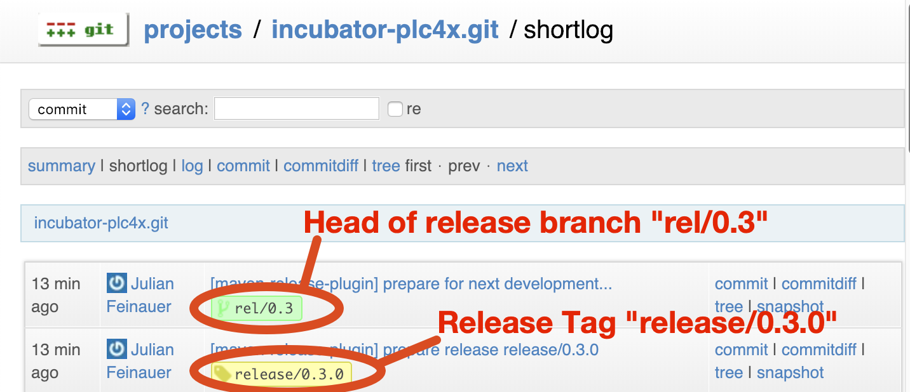
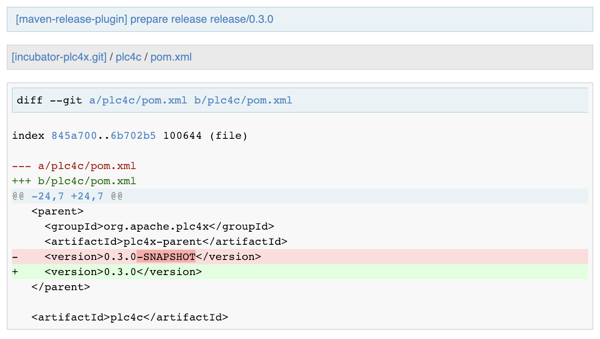
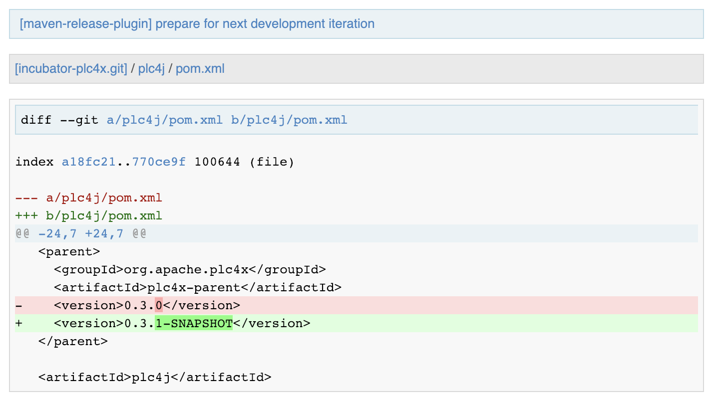

mvn release:branch -P with-sandbox,with-cpp,with-boost,with-dotnet,with-python,with-proxies,with-logstash -DbranchName=rel/{current-short-version} -DautoVersionSubmodules=true
Releasing PLC4X
TL/DR
| Please be sure to execute the release with a Java version between 1.8 and 11 or the Karaf feature tests will not run. |
-
Update the
RELEASE_NOTES -
Check year in
NOTICE -
Create release branch:
-
Add a new section to the
RELEASE_NOTESondevelop -
Prepare the release:
mvn release:prepare -P with-sandbox,with-cpp,with-boost,with-dotnet,with-python,with-proxies,with-logstash -DautoVersionSubmodules=true
-
Perform the release:
mvn release:perform -DreleaseProfiles=apache-release,with-boost,with-proxies,with-logstash
-
Close the staging repo on
Nexus -
Stage the release artifacts in
SVN -
Vote on the mailing list
-
Move RC to the release section of
SVN -
Remove old releases in
SVN -
Release staging repo on
Nexus -
Add the version to the DOAP file on
develop -
Update Download site
-
Update Jira
-
Merge back release version to
masterbranch -
Send announce email
Preparing your system for being able to release
As part of the release process, Maven will upload maven release artifacts to a so-called staging repository.
This can be thought of as an ad-hoc Maven repository that contains only the artifacts for one release. This helps reviewers to see what’s in the convenience maven package and to release that to the public repos with one click.
But in order to be allowed to upload artifacts, your account has to be enabled for this and you have to tell Maven about your credentials.
In order to do this, you should provide these credentials via .m2/settings.xml.
So if you don’t already have one, you should create a .m2 directory in your user home and inside that create a settings.xml file with at least this content:
<?xml version="1.0" encoding="UTF-8"?>
<settings xsi:schemaLocation="http://maven.apache.org/SETTINGS/1.1.0 http://maven.apache.org/xsd/settings-1.1.0.xsd" xmlns="http://maven.apache.org/SETTINGS/1.1.0"
xmlns:xsi="http://www.w3.org/2001/XMLSchema-instance">
<servers>
<!-- Apache Repo Settings -->
<server>
<id>apache.snapshots.https</id>
<username>{user-id}</username>
<password>{user-pass}</password>
</server>
<server>
<id>apache.releases.https</id>
<username>{user-id}</username>
<password>{user-pass}</password>
</server>
</servers>
</settings>
This tells maven to use above credentials as soon as a repository with the id apache.snapshots.https or apache.releases.https is being used.
For a release all you need is the releases repo, but it is good to have the other in place as it enables you to also deploy SNAPSHOTs from your system.
There repos are defined in the apache parent pom and is identical for all Apache projects.
Additionally all artifacts are automatically signed by the release build. In order to be able to do this you need to setup GPG.
The key being used to sign the artifacts will have to be linked to your Apache E-Mail ({apache-id}@apache.org) and verified by at least one fellow Apache committer (Ideally more) that have trusted keys themselves.
Usually for this you have to get in touch - in real life - with any Apache committer with a trusted key.
Attending an ApacheCon is usually a great way to do this as usually every ApacheCon has a Key Signing event in it’s schedule.
He can then sign your key and hereby enable you to sign Apache release artifacts.
There’s a detailed description here.
If you happen to have multiple keys, adding the following profile to your settings.xml should help:
<profile>
<id>apache-release</id>
<properties>
<gpg.keyname>5C60D6B9</gpg.keyname><!-- Your GPG Keyname here -->
<!-- Use an agent: Prevents being asked for the password during the build -->
<gpg.useagent>true</gpg.useagent>
<gpg.passphrase>topsecret-password</gpg.passphrase>
</properties>
</profile>
Preparing the codebase for a release
Usually you will have to update the RELEASE_NOTES document to the new version.
I would suggest doing this prior to the branch as otherwise you will definitely have to port it back to develop.
So remove the SNAPSHOT and (Unreleased) markers from the file and add missing parts.
Also if you are doing the first release in a new year, it is advisable to search for the old year and check if any occurrences are ok the way they are.
Usually the NOTICE file has to be adjusted.
Creating a release branch
According to SemVer, we have: Major, Minor and Bugfix releases.
For each new Major and Minor release we create a new branch at the beginning of a code-freeze phase.
So if currently the project version in develop is 0.7.0-SNAPSHOT, we create a branch rel/0.7.
When creating the branch is exactly the moment in which the version in develop is incremented to the next minor version.
This can and should be automated by the maven-release-plugin.
Per default the plugin will ask for the working copy version during the build execution.
This is the version the develop branch will be changed to.
In contrast to normal builds, it is important to enable all profiles when creating the branch as only this way will all modules versions be updated. Otherwise the non-default modules on develop will reference the old version which will cause problems when building.
The parameter autoVersionSubmodules will tell the release plugin to release all modules with the same version.
Otherwise we would have to define the working copy version for each module.
mvn release:branch -P with-sandbox,with-cpp,with-boost,with-dotnet,with-python,with-proxies,with-logstash -DbranchName=rel/{minor-version} -DautoVersionSubmodules=true
Per default the plugin suggests the next bugfix version as working version, however we want it to use the next minor version.
So in case of preparing the release branch for 0.7.0-SNAPSHOT the command would be the following:
mvn release:branch -P with-sandbox,with-cpp,with-boost,with-dotnet,with-python,with-proxies,with-logstash -DbranchName=rel/0.7 -DautoVersionSubmodules=true
The plugin will then aks for the version:
What is the new working copy version for "PLC4X"? (org.apache.plc4x:plc4x-parent) 0.7.1-SNAPSHOT: : 0.8.0-SNAPSHOT
Where the suggested default is manually overridden.
This step now should perform quite quickly as no build and no tests are involved.
However in the end the versions of the develop branch are updated and a new rel/0.7 branch is created.
Preparing develop for the next iteration
Now is a good time to add a new section to the RELEASE_NOTES document for the new SNAPSHOT version.
Here comes a template:
============================================================== (Unreleased) Apache PLC4X 0.8.0-SNAPSHOT ============================================================== New Features ------------ Incompatible changes -------------------- Bug Fixes --------- // Rest of the file
Also be sure to do a quick full-text-search to check if the version was updated correctly everywhere.
| If you find anything here, you will need to pay attention during the release. |
Release stabilization phase
Now usually comes a phase in which last tests and checks should be performed.
If any problems are found they have to be fixed in the release branch.
Changes should either be re applied in develop or cherry-picked, however merging things back can cause a lot of problems ans we no longer have the same versions.
Preparing a release
Same as with creating the branch it is important to enable all profiles when creating the branch as only this way will all modules versions be updated. Otherwise the non-default modules on develop will reference the old version which will cause problems when building. For people building with some of the additional profiles from the source release will be impossible.
As especially when switching a lot between different branches, it is recommended to do a clean checkout of the repository. Otherwise a lot of directories can be left over, which would be included in the source-release zip. In order to prepare a release-candidate, the first step is switching to the corresponding release-branch.
After that, the following command will to all preparation steps for the release:
mvn release:prepare -P with-sandbox,with-cpp,with-boost,with-dotnet,with-python,with-proxies,with-logstash -DautoVersionSubmodules=true
(The -P with-sandbox,with-cpp,with-boost,with-dotnet,with-python,with-proxies,with-logstash tells maven to activate the all profiles that partition the build and makes sure the versions of all modules are updated as part of the release)
In general the plugin will now ask you 3 questions:
-
The version we want to release as (It will suggest the version you get by omitting the
-SNAPSHOTsuffix) -
The name of the tag the release commit will be tagged with in the SCM (Name it
release/{release-version}(release/0.7.0in our case) -
The next development version (The version present in the pom after the release) (
{current-next-bugfix-version}in our case)
Usually for 1 and 3 the defaults are just fine, make sure the tag name is correct as this usually is different.
What the plugin now does, is automatically execute the following operations:
-
Check we aren’t referencing any
SNAPSHOTdependencies. -
Update all pom versions to the release version.
-
Run a build with all tests
-
Commit the changes (commit message:
[maven-release-plugin] prepare release release/0.7.0) -
Push the commit
-
Tag the commit
-
Update all poms to the next development version.
-
Commit the changes (commit message:
[maven-release-plugin] prepare for next development iteration) -
Push the commit
However this just prepared the git repository for the release, we have to perform the release to produce and stage the release artifacts.
Please verify the git repository at: https://gitbox.apache.org/repos/asf?p=plc4x.git is in the correct state. Please select the release branch and verify the commit log looks similar to this

It is important that the commit with the message "[maven-release-plugin] prepare release release/0.7.0" is tagged with the release tag (in this case release/0.3.0)
If you check the commit itself, it should mainly consist of version updates like this:

The root pom has a few more changes, but in general this should be what you are seeing.
After that should come a second commit:

This now updates the versions again, but this time from the release version to the one we selected for the next development iteration (in this case 0.3.1-SNAPSHOT)
| If the commit history doesn’t look like this, something went wrong. |
What if something goes wrong?
If something goes wrong, you can always execute:
mvn release:rollback
And it will change the versions back and commit and push things.
However it will not delete the tag in GIT (locally and remotely). So you have to do that manually or use a different tag next time.
Performing a release
This is done by executing another goal of the maven-release-plugin:
mvn release:perform -DreleaseProfiles=apache-release,with-boost,with-proxies,with-logstash
This executes automatically as all information it requires is located in the release.properties file the prepare goal prepared.
The first step is that the perform goal checks out the previously tagged revision into the root modules target/checkout directory.
Here it automatically executes a maven build (You don’t have to do this, it’s just that you know what’s happening):
mvn clean deploy -P apache-release,with-boots,with-proxies,with-logstash
As the apache-release profile is also activated, this builds and tests the project as well as creates the JavaDocs, Source packages and signs each of these with your PGP key.
We are intentionally not adding the other profiles, as these either produce binary artifacts that usually only work on the system they were compiled on (C++, .Net) or we haven’t found a good way to distribute them via Maven yet (Python) or deployment is disabled anyway (sandbox).
As this time the build is building with release versions, Maven will automatically choose the release url for deploying artifacts.
The way things are setup in the apache parent pom, is that release artifacts are deployed to a so-called staging repository.
You can think of a staging repository as a dedicated repository created on the fly as soon as the first artifact comes in.
After the build you will have a nice and clean Maven repository at https://repository.apache.org/ that contains only artifacts from the current build.
After the build it is important to log in to Nexus at https://repository.apache.org/, select Staging Repositories and find the repository with the name: orgapacheplc4x-{somenumber}.
Select that and click on the Close button.
Now Nexus will do some checks on the artifacts and check the signatures.
As soon as it’s finished, we are done on the Maven side and ready to continue with the rest of the release process.
A release build also produces a so-called source-assembly zip.
This contains all sources of the project and will be what’s actually the release from an Apache point of view and will be the thing we will be voting on.
This file will also be signed and SHA512 hashes will be created.
Staging a release
Each new release and release-candidate has to be staged in the Apache SVN under:
The directory structure of this directory is as follows:
./KEYS ./0.7.0/ ./0.7.0/rc1 ./0.7.0/rc1/README ./0.7.0/rc1/RELEASE_NOTES ./0.7.0/rc1/apache-plc4x-0.7.0-source-release.zip ./0.7.0/rc1/apache-plc4x-0.7.0-source-release.zip.asc ./0.7.0/rc1/apache-plc4x-0.7.0-source-release.zip.sha512
You can generally import the stuff, by preparing a directory structure like above locally and then using svn import to do the importing:
cd ./{current-full-version}
svn import rc1 https://dist.apache.org/repos/dist/dev/plc4x/{current-full-version}/rc1 -m"Staging of rc1 of PLC4X {current-full-version}"
The KEYS file contains the PGP public key which belongs to the private key used to sign the release artifacts.
If this is your first release be sure to add your key to this file. For the format have a look at the file itself. It should contain all the information needed.
Be sure to stage exactly the README and RELEASE_NOTES files contained in the root of your project.
Ideally you just copy them there from there.
All of the three -source-relese.zip artifacts should be located in the directory: target/checkout/target
So after committing these files to SVN you are ready to start the vote.
Starting a vote on the mailing list
After staging the release candidate in the Apache SVN, it is time to actually call out the vote.
For this we usually send two emails. The following would be the one used to do our first TLP release:
E-Mail Topic:
[VOTE] Apache PLC4X 0.7.0 RC1
Message:
Apache PLC4X 0.7.0 has been staged under [2] and it’s time to vote
on accepting it for release. All Maven artifacts are available under [1].
Voting will be open for 72hr.
A minimum of 3 binding +1 votes and more binding +1 than binding -1
are required to pass.
Release tag: release/0.7.0
Hash for the release tag: {replacethiswiththerealgitcommittag}
Per [3] "Before voting +1 PMC members are required to download
the signed source code package, compile it as provided, and test
the resulting executable on their own platform, along with also
verifying that the package meets the requirements of the ASF policy
on releases."
You can achieve the above by following [4].
[ ] +1 accept (indicate what you validated - e.g. performed the non-RM items in [4])
[ ] -1 reject (explanation required)
[1] https://repository.apache.org/content/repositories/orgapacheplc4x-{somefourdigitnumber}
[2] https://dist.apache.org/repos/dist/dev/plc4x/0.7.0/rc1
[3] https://www.apache.org/dev/release.html#approving-a-release
[4] https://cwiki.apache.org/confluence/display/PLC4X/Validating+a+staged+Release
As it is sometimes to do the vote counting, if voting and discussions are going on in the same thread, we send a second email:
E-Mail Topic: [DISCUSS] Apache PLC4X 0.7.0 RC1 Message: This is the discussion thread for the corresponding VOTE thread. Please keep discussions in this thread to simplify the counting of votes. If you have to vote -1 please mention a brief description on why and then take the details to this thread.
Now we have to wait 72 hours till we can announce the result of the vote.
This is an Apache policy to make it possible for anyone to participate in the vote, no matter where that person lives and not matter what weekends or public holidays might currently be.
The vote passes, if at least 3 +1 votes are received and more +1 are received than -1.
After the 72 hour minimum wait period is over and we have fulfilled the requirement of at least 3 +1 votes and more +1 than -1, a final reply is sent to the vote thread with a prefix of [RESULT] in the title in which the summary of the vote is presented in an aggregated form.
E-Mail Topic:
[RESULT] [VOTE] Apache PLC4X 0.7.0 RC1
Message:
So, the vote passes with {number of +1 votes} +1 votes by PMC members {number of +1 votes from non-pmc members} +1 vote by a non PMC member.
Releasing after a successful vote
As soon as the votes are finished and the results were in favor of a release, the staged artifacts can be released. This is done by moving them inside the Apache SVN.
svn move -m "Release Apache PLC4X 0.7.0" \
https://dist.apache.org/repos/dist/dev/plc4x/0.7.0/rc1 \
https://dist.apache.org/repos/dist/release/plc4x/0.7.0
This will make the release artifacts available and will trigger them being copied to mirror sites.
This is also the reason why you should wait at least 24 hours before sending out the release notification emails.
Cleaning up older release versions
As a lot of mirrors are serving our releases, it is the Apache policy to clean old releases from the repo if newer versions are released.
This can be done like this:
svn delete https://dist.apache.org/repos/dist/release/plc4x/0.3.0/ -m"deleted version 0.3.0"
After this https://dist.apache.org/repos/dist/release/plc4x should only contain the latest release directory.
Releasing the Maven artifacts
The probably simplest part is releasing the Maven artifacts.
In order to do this, the release manager logs into Nexus at https://repository.apache.org/, selects the staging repository and clicks on the Release button.
This will move all artifacts into the Apache release repository and delete the staging repository after that.
All release artifacts released to the Apache release repo, will automatically be synced to Maven central.
Add the version to the DOAP file
Now that the release is out, in the develop branch, update the DOAP file for plc4x.
This is found at:
src/site/resources-filtered/plc4x-doap.rdf
Please add the just released version to the top of the versions.
This file is needed for Apache’s tooling to automatically keep track of project release activity and we use this internally too to automatically update the documentation to always reference the latest released version automatically.
Merge back release version to master branch
The master branch should always point to the last released version. This has to be done with git
git checkout master git merge release/0.7.0
When there are conflicts it could help to use the "theirs" merge strategy, i.e.,
git merge -X theirs release/0.7.0
Possibly a manual conflict resolution has to be done afterwards. After that, changes need to be pushed.
Updating Jira
-
Set the released version to "released" and set the "release-date"
-
Add the next version to the versions.
Update the download site
The URL http://plc4x.apache.org/users/download.html has to be changed and the current release
has to be listed there.
This is done by changing the download.adoc under src/site/users/ (in the develop branch, as this is where the site is generated from!)
-
Copy the last release down to Previous Releases
-
Point the download links of the last release to archive, e.g.
http://archive.apache.org/dist/plc4x/0.7.0/apache-plc4x-0.7.0-source-release.zip -
Add the new Release under Current Releases and change all links. Note: Please add an anchor for the toc
-
Update the sections for the changes according to the RELEASE_NOTES from the release Note: Transfer all to ascii-doc notation to ensure correct rendering of the site Also remove the JIRA TICKET ids in Front
Notifying the world
Make sure you have given the Apache mirrors time to fetch the release files by waiting at least 24 hours after moving the release candidate to the release part of the SVN.
After that it is time to announce your release to the world:
From: your apache email address To: announce@apache.org CC: dev@plc4x.apache.org E-Mail Topic: [ANNOUNCE] Apache PLC4X 0.7.0 released Message: The Apache PLC4X team is pleased to announce the release of Apache PLC4X 0.7.0 PLC4X is a set of libraries for communicating with industrial programmable logic controllers (PLCs) using a variety of protocols but with a shared API. The current release contains drivers able to communicate with industrial PLCs using one of the following protocols: * Siemens S7 (0x32) * Beckhoff ADS * Modbus * EtherNet/IP Beyond that we also provide integration modules for the following Apache projects and frameworks: * Apache Edgent (Incubating) * Apache Camel * Apache Kafka (Kafka Connect) Visit the Apache PLC4X website [1] for general information or the downloads page [2] for release notes and download information. Regards, The Apache PLC4X team [1] http://plc4x.apache.org [2] http://plc4x.apache.org/users/download.html
It is important to note that you have to send this email from your apache email address or it will be rejected. This wasn’t very simple for me to setup. A general description can be found here: https://reference.apache.org/committer/email Here’s what I did in google mail to allow sending of emails: https://gmail.googleblog.com/2009/07/send-mail-from-another-address-without.html Note … you will be able to select the alternate sending address if you click into the recipients line of a new email (Not very intuitive).
After that email is out the door, you’re done. Congrats!